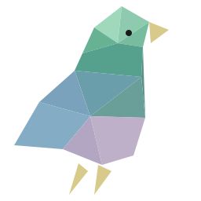

Freedom
The foundation. Space to think, choose, move, and create.
builder · mentor · zero-to-one
I bring ideas to life.
I'll help you reach your goal, or find it.
20 years in management and IT, on your side.
The foundation. Space to think, choose, move, and create.
Deeply essential. In design, people, places, and ideas.
Be bold. Be expressive. Be alive. Burn bright.
Serve humanity honestly. Profit follows — never leads.
I do my best work where ideas take shape and first prototypes get built.
Do, observe, learn, improve, repeat.
Comfortable where others hesitate. Busy work, absurd rules, and politics drain me.
Write, build, draw, code, cook. Turn thought into reality.
Read books. Watch films. Study art. Good input sharpens good output.
Walk, lift, run, dance. A stagnant body distorts thinking.
Keep a community. Shared reality keeps you sane.
Read comics on the PS Vita, one panel at a time.
Python · C · SDL2
Local, privacy-focused speech-to-text for Linux. No cloud. No tracking.
Rust